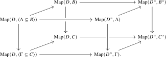

Chapters 1 and 2 use the rebuild2 formalization. Agda links for Chapter 3 remain temporarily unavailable.
3.2 Full subcategories
As a consequence of the subcategory axiom, we may in particular form full subcategories.
Construction 3.2.1. Taking \(E=*\) in Construction 3.1.1, and using \(C^{\simeq }=\Map (*,C)\) and \(D^{\simeq }=\Map (*,D)\), gives a map \[ \Map (C,D)\longrightarrow \Map (C^{\simeq },D^{\simeq }). \] Its specialization at \(f\colon C\to D\) is the functor \(f^{\simeq }\colon C^{\simeq }\to D^{\simeq }\) from Construction 1.4.16.
Definition 3.2.2 (Full subcategory). A functor \(f\colon A \to C\) is called a full subcategory if the induced map \(f^{\simeq }\colon A^{\simeq } \to C^{\simeq }\) is an embedding and for every category \(D\), the commutative square
is a pullback square.
More informally, this says that a functor \(D \to C\) factors through \(A\) if and only if the map \(D^{\simeq } \to C^{\simeq }\) on objects factors through the embedding \(A^{\simeq } \to C^{\simeq }\).
Proof
Proof. For every category \(D\), the map \(\Map (D,A)\to \Map (D,C)\) is the base change of the embedding \[ (f^{\simeq })_*\colon \Map (D^{\simeq },A^{\simeq })\longrightarrow \Map (D^{\simeq },C^{\simeq }). \] It is therefore an embedding. The claim follows from Proposition 1.6.20. □
Definition 3.2.4 (Collection of objects). Consider a category \(C\). A collection of objects is a pair \((\Gamma ,j)\) consisting of an anima \(\Gamma \) equipped with an embedding \(j\colon \Gamma \hookrightarrow C^{\simeq }\). In this case, we define an anima \(M_{\Gamma }\) via the following pullback:
The map \(m\) is an embedding, as it is a base change of the embedding \(j \times j\). The resulting collection \(M_{\Gamma }\) is closed under composition: the identity of an object represented by \(\Gamma \) again has both endpoints in \(\Gamma \), and the composite of two composable morphisms with endpoints represented by \(\Gamma \) has the same property. This allows us to make the following definition:
Definition 3.2.5. Given an embedding \(j\colon \Gamma \hookrightarrow C^{\simeq }\), we define \[ \langle \Gamma \subseteq C \rangle := \langle M_{\Gamma } \rangle _C, \] and refer to it as the full subcategory of \(C\) spanned by \(\Gamma \).
Lemma 3.2.6. There is a preferred equivalence \(\lra {\Gamma \subseteq C}^{\simeq } \iso \Gamma \) fitting in a commutative triangle
Proof
Proof. Given a category \(D\), consider the following two commutative squares:
The top square is a pullback by definition of \(\langle \Gamma \subseteq C \rangle \), and the bottom square is a pullback by definition of \(M_{\Gamma }\). Taking \(D = *\) we thus obtain a pullback square of the form
Since \(j\) is an embedding, this implies that \(\lra {\Gamma \subseteq C}^{\simeq } \simeq \Gamma \), cf. Lemma 1.6.22. It is immediate from the construction of this equivalence that it lives over \(C^{\simeq }\). □
Proposition 3.2.7. The inclusion \(\tilde {j}\colon \lra {\Gamma \subseteq C} \to C\) is a full subcategory, in the sense of Definition 3.2.2.
Proof
Proof. We showed in Lemma 3.2.6 that the induced functor \(\tilde {j}^{\simeq }\colon \lra {\Gamma \subseteq C}^{\simeq } \to C^{\simeq }\) agrees, under the preferred equivalence \(\lra {\Gamma \subseteq C}^{\simeq }\iso \Gamma \), with \(j\colon \Gamma \to C^{\simeq }\), hence is an embedding by assumption. We thus need to show that for every category \(D\), the top square in the following commutative diagram is a pullback square:
The bottom two horizontal maps are embeddings since they are induced by the embedding \(\lra {\Gamma \subseteq C}^{\simeq } \to C^{\simeq }\). The outer rectangle agrees with the outer pullback square in the proof of Lemma 3.2.6, hence is a pullback square itself. It then follows from Lemma 1.6.28 that the top square is also a pullback square. □
Lemma 3.2.9. The inclusion \(\langle C^{\simeq } \subseteq C \rangle \hookrightarrow C\) is an equivalence.
Proof
Lemma 3.2.10. Let \(C\) and \(D\) be categories, and let \(j\colon \Gamma \hookrightarrow C^{\simeq }\) and \(k\colon \Lambda \hookrightarrow D^{\simeq }\) be embeddings. Then there is a preferred equivalence \[ \langle \Gamma \times \Lambda \subseteq C \times D \rangle \iso \langle \Gamma \subseteq C \rangle \times \langle \Lambda \subseteq D \rangle . \]
Proof
Proof. This is an exercise in unwinding definitions and is left to the reader: see Exercise 3.8.2. □
Lemma 3.2.11. Consider a functor \(f\colon B \to C\). Given an embedding \(\Gamma \hookrightarrow C^{\simeq }\), we define \(\Lambda \hookrightarrow B^{\simeq }\) via the pullback
Then the square
is a pullback square.
Proof
Proof. By Proposition 1.6.3, it will suffice to check that this square becomes a pullback square after applying the functor \(\Map (D,-)\) for every category \(D\). To this end, consider the following commutative diagram:

Here the top and bottom face of the cube are pullback squares by Corollary 3.2.8, while the right face is a pullback square since \(\Map (D^{\simeq }, -)\) preserves pullback squares by Proposition 1.6.3. It follows from the pasting law of pullback squares that also the left face of the cube is a pullback square, finishing the proof. □
Lemma 3.2.12. Let \(f\colon B \to C\) be a functor exhibiting \(B\) as a full subcategory of \(C\). Then \(f\) is an equivalence if and only if the induced map \(f^{\simeq }\colon B^{\simeq } \to C^{\simeq }\) is an equivalence.
Proof
Proof. The forward implication follows by functoriality of groupoid cores. Conversely, suppose that \(f^{\simeq }\) is an equivalence. The defining pullback square for a full subcategory then shows that \(\Map (D,B)\to \Map (D,C)\) is an equivalence for every category \(D\). Hence \(f\) is an equivalence by Proposition 1.4.11. □
Supplementary notes
- From object families to arrow families AI-generated